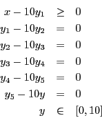
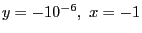
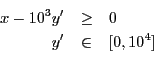
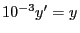
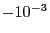
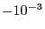
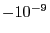
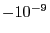

As we said before, a typical recommendation for improving numerics is to limit the
range of constraint matrix coefficients. The rationale behind
this guideline is that terms to be added in a linear expression should
be of comparable magnitudes so that rounding errors are minimized.
For example:
is usually considered a potential source of numerical instabilities
due to the wide range of the coefficients in the constraint.
However, it is easy to implement a simple (but useless) alternative:

This form certainly has nicer values in the matrix. However, the
solution
 might still be considered feasible as the
bounds on variables and constraints might be violated within the
tolerances. A better alternative is to reformulate
as

where
. In this setting, the most negative values for
 which might be considered feasible would be , and for
the original
which might be considered feasible would be , and for
the original  variable it would be , which is a clear
improvement over the original situation.
variable it would be , which is a clear
improvement over the original situation.
![\begin{eqnarray*}
x - 10^{6} y &\geq& 0 \\
y&\in&[0,10]
\end{eqnarray*}](img204.png)